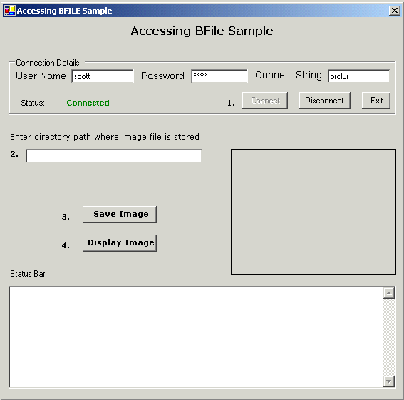
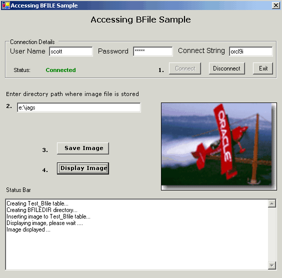

Accessing BFILEs Through ODP.NET Sample
Table of Contents
The purpose of this sample application is to demonstrate:
1) How to insert BFILE data through ODP.NET ?
2) How to view BFILE data through ODP.NET ?
Large Objects (LOBs) are used to store unstructured
data such as text, graphic images, video clips etc. BFILE is a type of
external LOB that is used to store large binary data objects stored in
operating system files outside database tablespaces. BFILE datatype allows
read-only byte stream access to large files on the file system of the
database server.
ODP.NET provides support to BFILE though OracleBFile
object type. Unlike Oracle BLOBs and CLOBs, Oracle BFILEs are not updatable
but BFILE locators are updatable.
This Visual Basic .NET sample demonstrates accessing
BFILEs through ODP.NET. When this sample is run a window is displayed
through which the user can establish database connection by entering parameters
as per his/her database. After connecting to database successfully, the
user needs to enter the full, qualified path of the location on the database
server where the image file which the user wants to insert resides. On
clicking the "Save Image" button the required database objects
are created and then the image is inserted. To view the inserted image
the user can click "Display Image" button, the image is retrieved
using GetOracleBFile method of OracleDataReader
into an OracleBFile object. Messages are
displayed at each step in the status bar.
When this sample application is run, a windows application
is displayed. Enter the username, password and connect string as per your
database environment. Click "Connect" button. If the connection
is successfully established then the connection status is displayed as
"connected" as shown in Figure 1.1.

Figure 1.1: Screenshot displaying window after connection
was successfully established
To insert a BFILE, enter the directory path on the
database server where you have copied "poster.gif"
file, in the textbox provided and click "Save Image" button.
See the messages in the status bar. Then click on "Display Image"
button. The image is displayed in the picture box as shown in figure
1.2.

Figure 1.2 : Screenshot displaying
saved image from database
A "Disconnect" button is provided for user
to disconnect the database connection. One can use "Connect"
button again to connect as a different database user. To close this application
the user can click the "Exit" button.
-
Visual Basic.NET installed with Visual Studio
2005/2008/2010/2012.
-
Oracle11g
Database Enterprise Edition or higher running SQL*Net TCP/IP listener
(can be downloaded
here)
-
Oracle Data Provider for .NET (ODP.NET) (can
be downloaded
here)
.
Unzip AccessBFile.zip
using Winzip or command utility to a convenient directory referred to
as <Extract_Dir>.
Extraction of the zip file results in the creation of "AccessBFile"
directory. Refer Description of Sample Files
section for more details.
An Oracle database object "Directory"
needs to be created to run this sample. For any database user
to create this object, a special privilege "CREATE ANY DIRECTORY"
needs to be granted by DBA (for eg. SYSTEM database user).
To grant this privilege to any normal database user
say scott (in this example), at SQL prompt type the following
command:
|
Syntax:
SQL> CONNECT <DBAUser>/<Password>@<ConnectString>;
SQL> GRANT CREATE ANY DIRECTORY TO <DatabaseUser>;
eg.:
SQL> CONNECT system/manager@oracle;
SQL> GRANT CREATE ANY DIRECTORY TO scott;
|
|
Now "Scott"
user can run this sample.
1. Open AccessBFile.sln using Visual Studio
.NET from <Extract_Dir>\AccessBFile folder.
2. Ensure that the following .NET Component References
have been added to AccessBFile project:
System,
System.Data,
System.Drawing,
System.Windows.Forms,
Oracle.ManagedDataAccess.
To add the above .NET Components
a)Go to Menu ->View-> Solution Explorer.
b)Right click on AccessBFile project, choose 'Add Reference'.
c)Choose the above .NET Components from the list displayed.
d)Click 'Select', then OK.
e) The chosen .NET component gets added to the project.
3. Build and run the sample.
1. A sample image, poster.gif (BFILE)
is provided with this sample. Copy "poster.gif"
image file from <Extract_Dir>\AccessBfile\doc folder to
a directory located on the database server. Note down this directory as
it will be later required in the sample.
2. When this sample is run a window with facilities
like establishing database connection and inserting/displaying BFILE is
displayed.
3. Ensure that you have completed the Database
Setup.
4. Enter appropriate Username, Password, Data Source
in the text boxes and click "Connect" button. If the connection
is successfully established the connection status "connected"
is displayed in green. NOTE: Ensure that the database
user you are using has the "CREATE ANY DIRECTORY"
privilege.
5. To insert image "poster.gif"
to the database. Enter the full, qualified path of the image where it
is located on the database server. This is the directory path on the database
server you used in Step 1.
6. Click "Save Image" button to insert image
to the database. The following steps are taken to insert the image:
- A database table Test_Bfile with
a column named "photo" of type BFILE is created.
- A Directory "BFILEDIR"
is created pointing the path entered by the user in Step. 5.
- A single row, containing a BFILE pointer is inserted
to the Test_Bfile table.
7. To display the inserted image from the Test_Bfile
database table. Click on "Display Image" button. The following
steps are taken to display the image:
- BFILE locator is selected from Test_Bfile
Table and stored in OracleBFile.
- A memory stream is opened on the selected OracleBFile
(BFILE locator).
- Image file is fetched and shown in a Picture
Box.
1. In case the image is not displayed correctly, then
check the path entered in the text box. The image "poster.gif"
must be stored on the database server. In case your database server is
installed on Windows operating system then enter the path as for e.g.
e:\myimages. If your database server is on
a Unix/Linux operating system then enter the path as for e.g.
/home/myimages. Where myimages could
be any directory as per your machine settings.
2. In case you wish to use some other image other than
"poster.gif", then you will have
to change the image name in the code. The image name "poster.gif"
is hardcoded in the code in Bfile.vb file.
This sample provides facility to only view Binary files like images etc.
Following is the directory structure of the AccessBfile.zip
:
| Directory |
Files |
Description
|
AccessBFile\doc\ |
Readme.html |
This file |
otn.css |
Cascading Stylesheet applied to Readme.html |
poster.gif |
A sample image file used in this sample. |
AccessBFile\doc\images\ |
*.gif |
Screenshots used in Readme.html
file |
AccessBFile\src\ |
AcessBFile.sln |
Visual Studio Solution |
AcessBFile.suo |
Solution User option (this
file gets automatically generated when a Visual Studio Solution is
created). |
Bfile.vb |
The source file containing
the UI and all the methods that are used for accessing a BFILE. |
Bfile.resx |
.NET XML resource template |
AccessBfile.vbproj |
VB project file |
AccessBfile.vbproj.user |
Visual Studio Project
User Options (this file gets automatically generated when a Visual
Studio Project is created) |
|